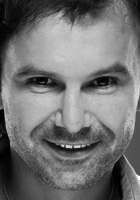
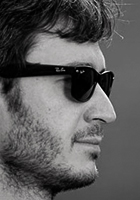

Океан Ельзи багаторазово визнані публікою й критиками як краща рок-група і краща live-група СНД і Східної Європи.
Океан Ельзи - це експресивний, самовідданий концертний драйв, унікальне поєднання справжньої слов'янської мелодійності з потужною роковою енергетикою.
Платівки групи завжди резонансні й стають гучною подією. Сольні концерти Океан Ельзи, головною умовою яких є живий звук, незмінно викликають великий інтерес.
Учасники групи

Святослав Вакарчук
вокал, автор музики і слів

Денис Глінін
ударніДенис Дудко
бас-гітараМілош Єліч
клавішні, аранжуванняВладімір Опсеніца
гітараІсторія групи
Альбоми
-
{{album.title}}